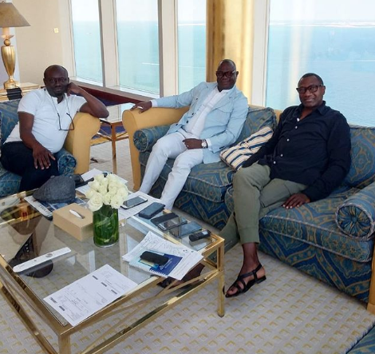
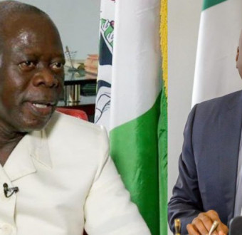

US Vice President Mike Pence makes unannounced trip to Iraq (Photos)
TUS Vice President Mike Pence made an unannounced trip to Iraq to visit US troops ahead of Thanksgiving, landing in the country Saturday, November 23rd amid violent anti-government protests. ...
US Vice President Mike Pence made an unannounced trip to Iraq to visit US troops ahead of Thanksgiving, landing in the country Saturday, November 23rd amid violent anti-government protests.
Pence visited the Al Asad Air Force Base in western Iraq, where he was greeted by the US Ambassador to Iraq and several military officers. He received a classified briefing from the commanding officer on the base and spoke by phone with Iraqi Prime Minister Adil Abdul Mahdi.
On the call, Pence told Mahdi that he traveled to Iraq in part to "extend gratitude to the men and women (of the US military) serving in your country," according to the TV travel pool with the vice president. Mike Pence and his wife Karen Pence later served the troops a Thanksgiving lunch, with the Vice President serving turkey and Mrs. Pence handing out yams.
As service members came up to them, the Pences asked each where they were from and thanked them for their service. Vice President Pence then delivered remarks to about 150 service members in a hanger. "The President and your Vice President and the American people are behind you 100%," Pence said, according to the TV travel pool.
Pence told the service members that the Trump administration was "fighting to secure another pay raise for the men and women in the military," but added "we need Congress to do their jobs," the TV travel pool reported. "Congress should have finished their work months ago but you know that partisan politics and endless investigations have slowed things down,"
Last updated 3 mins ago

'I have concluded interviews on my debut book on business lessons' - Billionaire, Femi Otedola
Nigerian billionaire, Femi Otedola is about to be an author.
Nigerian billionaire, Femi Otedola is about to be an author.
He shared this photo on Instagram today and wrote, 'It’s a wrap! Finally concluded interviews with my friends, Kunle Bakare and Simon Kolawole, on my debut book on business lessons. Interviews spanning 18 months across Lagos, Monte Carlo, Paris, New York, London and now Dubai'.
Last updated 3 mins ago
<

Oshiomhole mocks Saraki and others, says Dino Melaye is 20,000 feet below ground level and will need a miracle to be re-elected
Adams Oshiomhole slammed those that defected from the ruling All Progressives Congress (APC) he heads as he discussed the challeneges they are facing at the National Executive ...
Adams Oshiomhole slammed those that defected from the ruling All Progressives Congress (APC) he heads as he discussed the challeneges they are facing at the National Executive Council (NEC) meeting of the party.
According to the former Governor of Edo State, Former Senate President Bukola Saraki and 15 other lawmakers who defected to the People's Democratic Party (PDP) felt they could burn the APC down but they lost their reelection bid.
Oshiomhole who stated that there are no miracles in election, also took a swipe at Dino Melaye who he said is 20,000 feet below ground level and is hoping for a miracle at the rerun election on November 30.
“I also believe it is significant to point out all those who rebelled against this party, those who sort to burn us down, those who decamped at critical moment believing they could destabilize us and we won’t have enough time to make up as led by Senator Bukola Saraki and fifteen others; all sixteen of them, by the special grace of God, the Nigeria electorates have chosen to punish them with their PVCs and ballot papers. They were all voted out and APC’s senators were voted in to replace them.
“There is one that is still struggling, and as we speak, he is 20,000 feet below ground level and he is hoping that there will be a miracle that will bring him to that level and climb him to the senate.
“I believe by the special grace of God under your leadership (looking at Buhari), I believe that deficit (Dino Melaye) there are no miracles in elections, especially if it is free and fair.
“God willing, by the end of the month, God’s will in Kogi State will be done; the 16th stubborn one will go the way the other fifteen went,” Mr Oshiomhole told the crowded hall graced by party members and pressmen.
He also threw jab at some members of the party “who rode on the back of President Buhari to get money for their elections and still went back to decamp and attack the presidency and the institution of our party.”
Adams Oshiomhole also blamed the loss recorded in Zamfara, Oyo, Bauchi, and Adamawa elections on internal party crisis. He told party members to stop supporting candidates of the opposition party even if their allies in the APC loses.
“The issue of Bauchi and Adamawa, these are the states we have sitting governors. Looking at the result and listening to our officers from those states, it is very clear that these losses can easily be attributed to internal fighting (disunity) within the party in those respective states leading to internal sabotage.
“I think the lesson to learn from it is that no matter how aggrieved we are, the worst of our candidate embarking in an election should be preferred to an angel emerging as an opposition. It is my prayer that our leaders and cadres will recognise that once the primaries are done, everybody can’t win but whoever emerges should be supported. The spirit of party calls for a commitment to stand by whoever prevails, however, imperfect the process may be,” he said.